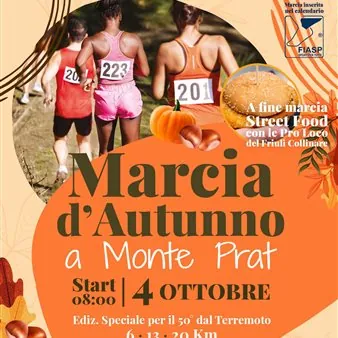

dom 4 ott · dalle 08:00
Marcia d'autunno a Monte Prat
Domenica 4 ottobre 2026, inizio ore 8:00, Edizione speciale per il 50° del Terremoto, Torna l’appuntamento organizzato dalla Pro Loco Forgaria nel Friuli per vivere una giornata all’aria aperta e scoprire, passo dopo passo, le bellezze naturali dell’Altopiano di Monte Prat. La…
 Indicazioni
Indicazioni
- Costi e prenotazioni
- Costo non indicato · Prenotazione non indicata
- Programma
- Programma da verificare. Apri la fonte ufficiale per orari e possibili aggiornamenti.
- In caso di maltempo
- Nessuna indicazione specifica pubblicata.
- Note
- Acquisito automaticamente dalla fonte.
L’EVENTO
Descrizione completa
Torna l’appuntamento organizzato dalla Pro Loco Forgaria nel Friuli per vivere una giornata all’aria aperta e scoprire, passo dopo passo, le bellezze naturali dell’Altopiano di Monte Prat.
La manifestazione ludico-motoria, aperta a tutti: singoli, gruppi e famiglie, propone tre diversi percorsi, per permettere a ciascuno di scegliere quello più adatto alle proprie possibilità e al proprio passo.
Ritrovo e partenza:
Polifunzionale Monte Prat – loc. Monte Prat, Forgaria nel Friuli (UD)
Iscrizioni e partenza libera
• dalle 8:00 alle 9:00 per il percorso ROSSO da 20 km
• dalle 8:00 alle 10:00 per i percorsi VERDE da 6 km e BLU da 13 km
Chiusura della manifestazione: all’arrivo dell’ultimo partecipante e comunque entro le 14:00.
𝐈 𝐏𝐄𝐑𝐂𝐎𝐑𝐒𝐈 𝐃𝐄𝐋𝐋𝐀 𝐌𝐀𝐑𝐂𝐈𝐀
VERDE – 6 km | Facile / turistico
Un percorso con fondo misto, adatto a chi desidera godersi la camminata con maggiore tranquillità.
Lunghezza effettiva: 5,80 km Dislivello: 120 m
BLU – 13 km | Intermedio / escursionistico
Un itinerario più articolato per chi desidera una camminata più lunga e dinamica tra i paesaggi dell’altopiano.
Lunghezza effettiva: 13,20 km Dislivello: 360 m
ROSSO – 20 km | Avanzato / impegnativo
Il percorso più lungo e sfidante, dedicato a chi vuole vivere Monte Prat con un’esperienza escursionistica più intensa.
Lunghezza effettiva: 19,50 km Dislivello: 640 m
Tutti i tracciati sono su fondo misto.
𝐈𝐒𝐂𝐑𝐈𝐙𝐈𝐎𝐍𝐈
• Soci FIASP: € 3,50
• Non soci FIASP: € 4,50 (€ 3,50 + maggiorazione di € 1,00)
Per i non soci FIASP, al momento dell’iscrizione sarà necessario fornire nome, cognome e data di nascita per l’acquisizione del documento di partecipazione.
𝐈𝐍𝐅𝐎𝐑𝐌𝐀𝐙𝐈𝐎𝐍𝐈
Pro Loco Forgaria nel Friuli:
WhatsApp +39 371 4113448 (solo messaggi)
prolocoforgaria@gmail.com
IL PROGRAMMA
Programma e orari
Appuntamenti raccolti dalle fonti elencate. Dove manca un orario, non è ancora disponibile in questa scheda.
Programma pubblicato
- Dal 2026-10-04 al 2026-10-04
INFORMAZIONI UTILI
Prima di partire
- Controllare la fonte prima di partire.
ORGANIZZAZIONE